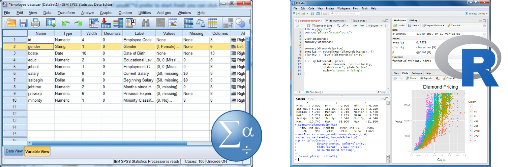
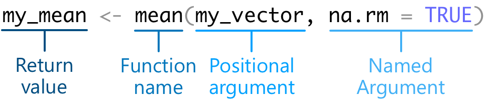

🎯 GOALS
Learning or re-capping the basics of writing code in the R language, including mathematical operations, defining variables, different types of data, and using R functions and packages.
1.1 Intro: Milk
For complex tasks, there are multiple ways to achieve a certain goal
Some of these ways are more effective than others
Humans don’t always naturally gravitate towards these; they often need to be taught


Figure: Different ways of achieving complex tasks.1
1.2 Doing math
Think of R like a fancy pocket calculator: You give it (numerical) inputs, it gives you an output
For example: Multiplying two numbers
In RStudio, hit the green ▶️ symbol to run the R code and see the output below
42 * 2## [1] 84✍️ EXERCISE
Check the current temperature for Berlin on the internet. Then use R to convert it from degrees Celsius to degrees Fahrenheit. The formula is: \(\text{°C}\times1.8+32\)
Replace the three dots (
...) with R code and hit the green ▶️ symbol to run it.
...1.3 Variables
The real power of programming languages: Storing the output of a computation as an intermediate result (variable) that can be reused for the next computation
We assign (define, create) a variable by choosing a custom name (here:
my_var) and an arrow symbol (<-)
my_var <- 4 + 4- To show the current value of a variable:
my_var## [1] 8- Or both assign and show the variable at once, using parentheses:
(my_other_var <- 3 * 2)## [1] 6- Re-use a previously defined variable:
my_var ^ 2## [1] 64✍️ EXERCISE
Re-do the temperature calculation from the previous exercise, but this time storing the temperatures in two separate variables.
degrees_celsius <- ...
(degrees_fahrenheit <- ...)1.4 Data types
We’ve only dealt with numbers, but there’s also other types of data
numeric: A number
13.4## [1] 13.4-
character: A string of letters (must be surrounded by quotation marks)
"Hello world"## [1] "Hello world"-
logical: The logical statementsTRUEandFALSE
TRUE## [1] TRUE- To check the type of a variable (here
my_var, defined above):
class(my_var)## [1] "numeric"We often want to store not just a single value (number, string, etc.) but multiple ones
-
vector: A list of elements, where all elements are of the same type- Defined using the
c()function (for “combine”)
- Defined using the
c(1, 5, 8, 21)## [1] 1 5 8 21-
data.frame: A table, that is, a two-dimensional structure with rows and columnsEach column is a vector, each row is from the same sample (e.g., participant, trial)
Each column should be given a name (the part before the equals sign)
data.frame(
country = c("Germany", "UK", "Denmark"),
population_mil = c(84.1, 67.1, 5.9),
eu_member = c(TRUE, FALSE, TRUE)
)## country population_mil eu_member
## 1 Germany 84.1 TRUE
## 2 UK 67.1 FALSE
## 3 Denmark 5.9 TRUE-
list: A list of elements, where the elements can be of different types- Extremely powerful (e.g., a list of data frames, a list of lists)
## [[1]]
## [1] "Hello world!"
##
## [[2]]
## [1] 42
##
## [[3]]
## [1] "Vector" "inside" "a" "list!"✍️ EXERCISE
As a group, create one vector with your names and another vector with your heights (in cm). Combine these two vectors into a data frame.
names <- ...
heights <- ...
(persons <- data.frame(
...,
...
))1.4 Selecting data
We often have large amounts of data and want to pick out a subset of them
A numeric index n in square brackets (here:
[5]) selects the nth (here: 5th) element
my_vector <- c(2, 3, 5, 7, 11, 13, 17, 19, 23)
my_vector[5]## [1] 11- A range of indices (e.g., 2nd to 4th) or vector of indices (e.g., 1st and 3rd) selects multiple elements
my_vector[2:4]## [1] 3 5 7
my_vector[c(1, 3)]## [1] 2 5- A logical condition selects all elements for which
the test is
TRUE
my_vector[my_vector > 5]## [1] 7 11 13 17 19 23- Data frames have two dimensions (rows and columns), so we need two indices separated by a comma
universities <- data.frame(
city = c("Heidelberg", "Leipzig", "Rostock", "Greifswald"),
established = c(1386, 1409, 1419, 1456),
students_k = c(31.5, 29.5, 14.0, 12.0)
)
universities[1, 3]## [1] 31.5- Select all rows (or columns) by leaving the respective index empty
universities[2, ]## city established students_k
## 2 Leipzig 1409 29.5- Select a single column (i.e., vector) with a dollar
sign (
$) and the column name- Note that this returns a vector
universities$established## [1] 1386 1409 1419 1456- Again, we can select only records (rows) that fulfill a certain logical condition
universities[universities$students_k > 20, ]## city established students_k
## 1 Heidelberg 1386 31.5
## 2 Leipzig 1409 29.5✍️ EXERCISE
The data frame
ToothGrowthis a dataset built into R. It contains the measured length of the teeth (columnlen) of 60 guinea pigs after receiving different doses of Vitamin C (columndose). The vitamin C was delivered either via ascorbic acid (value"VC"in columnsupp) or via orange juice (value"OJ").
head(ToothGrowth)## len supp dose
## 1 4.2 VC 0.5
## 2 11.5 VC 0.5
## 3 7.3 VC 0.5
## 4 5.8 VC 0.5
## 5 6.4 VC 0.5
## 6 10.0 VC 0.5Extract the vector of tooth lengths for all guinea pigs that received 2 milligrams (the maximum dose) of vitamin C and via orange juice.
(tooth_lengths <- ToothGrowth[... & ..., ]$...)💡 NOTE: Welcome to the Tidyverse
There’s a very popular set of R packages called the “tidyverse”2, which includes many functions designed to make the processing of (tabular) data in R easier (note that you’ll learn more about R functions and packages below). The result is code that is often a lot more readable.
For example, here’s the usual “base” R expression for extracting a vector from a dataframe based on a certain condition:
universities[universities$students_k > 20, ]$city. The corresponding tidyverse code looks like this:universities %>% filter(students_k > 20) %>% pull(city).For simplicity, we’ll mostly stick to base R functions and syntax for the remainder of the course – but you’ll surely encounter many useful tidyverse functions and examples as you become a more advanced R programmer.
1.5 Functions
R can do a lot more than simple mathematical operations
Predefined functions exist for many types of tasks, e.g., taking the mean of a vector of numbers:
## [1] 5- Here’s how we call the different bits and pieces when using a function:

Each function has a unique name
-
Arguments are the inputs that we want the function to do something with
Each argument has the form of
argument_name = valueThe first argument of a function is often the data – it’s common to leave its name out (making it a positional argument)
Arguments are separated from each other by commas
The return value is the output that the function gives back to us
✍️ EXERCISE
Intuitively, one might have thought that the way to compute the mean of four numbers would be
mean(2, 4, 6, 8). Why doesn’t this work?
💡 NOTE: R can be confusing
While not the case for
mean(), some functions indeed do take an arbitrary number of positional arguments. An example ispaste(), which pastes together multiple character strings into one long character string.You can check the help file of a function (more on that below) to see if a function behaves like
mean(), with a single first element (typically calledx), or likepaste(), with an arbitrary number of positional input arguments (indicated by...in the help file).
1.6 Getting help
- To learn more about a function – its arguments, return value, examples, etc.:
help(mean)- Or via this shortcut:
?mean- But note that this only helps when you know (part of) the function name – if not, try to ask Google (e.g., “averaging numbers in R”)
✍️ EXERCISE
Find out the R function to create a vector of random numbers from a normal distribution. Once you know the name of the function, use it to create a vector of 100 numbers with a mean 500 and a standard deviation of 50.
(random_numbers <- ...)1.7 Packages
R comes with “batteries included” – it has functions for many different tasks
For other, more specialized tasks, functions are often available in additional packages that can be downloaded for free from the internet
We first need to download and install the package – this only needs to be done once
install.packages("cowsay")- Next we load the package – this needs to be done every time we restart our R session
- Finally, we can use one of the functions from the package:
say("What a cool function!")##
## --------------
## What a cool function!
## --------------
## \
## \
## \
## |\___/|
## ==) ^Y^ (==
## \ ^ /
## )=*=(
## / \
## | |
## /| | | |\
## \| | |_|/\
## jgs //_// ___/
## \_)
## - We can also skip the
library("package_name")step and directly specify the package of the function:
cowsay::say("This also works!", by = "cow")##
## -----
## This also works!
## ------
## \ ^__^
## \ (oo)\ ________
## (__)\ )\ /\
## ||------w|
## || ||Further reading
McNeill, M. (2015). Base R cheatsheet. RStudio cheatsheets. https://github.com/rstudio/cheatsheets/blob/main/base-r.pdf
Navarro, D. (2018). Getting started with R. In Learning statistics with R: A tutorial for psychology students and other beginners (pp. 37–71). https://learningstatisticswithr.com/lsr-0.6.pdf
Add-on topics
1.8 Custom functions
- In addition to the functions in base R and published packages, we can write our own function(s):
say_dude <- function(what, by = "cat") {
what <- paste0(what, ", dude!")
cowsay::say(what, by)
}
say_dude("Nice function")##
## --------------
## Nice function, dude!
## --------------
## \
## \
## \
## |\___/|
## ==) ^Y^ (==
## \ ^ /
## )=*=(
## / \
## | |
## /| | | |\
## \| | |_|/\
## jgs //_// ___/
## \_)
## - Short functions like this can also be defined on a single line:
✍️ EXERCISE
Write a custom function that implements the Celsius-to-Fahrenheit conversion from Section 1.2.
celsius_to_fahrenheit <- ...
celsius_to_fahrenheit(19.3)1.9 Repeating stuff
We often want to repeat the same operation on multiple inputs
Let’s assume we have a couple of friends and want to create a friendly message for each of them (stored in a vector or list)
The naive approach:
messages <- character()
messages[1] <- paste("Hello", "Ezra")
messages[2] <- paste("Hello", "Tom")
messages[3] <- paste("Hello", "Samantha")
messages## [1] "Hello Ezra" "Hello Tom" "Hello Samantha"- Better: Using a for loop
friends <- c("Ezra", "Tom", "Samantha")
messages <- character()
for (i in 1:length(friends)) {
messages[i] <- paste("Hello", friends[i])
}
messages## [1] "Hello Ezra" "Hello Tom" "Hello Samantha"- Even better: Applying a function to each element
friends <- c("Ezra", "Tom", "Samantha")
greet <- function(x) paste("Hello", x)
(messages <- lapply(friends, greet))## [[1]]
## [1] "Hello Ezra"
##
## [[2]]
## [1] "Hello Tom"
##
## [[3]]
## [1] "Hello Samantha"- Best of all: Making use of R’s vectorization of inputs (but this only works for simple functions)
## [1] "Hello Ezra" "Hello Tom" "Hello Samantha"